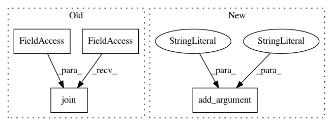

562c323823c1cde522f57b0ebb8496f561e949c7,examples/transformer/hyperparams.py,,,#,14
Before Change
"vocab_file": args.vocab_file,
},
"target_dataset": {
"files": [os.path.join(args.data_dir, args.dev_tgt)],
"vocab_share": True,
},
"batch_size": args.test_batch_size,
After Change
argparser.add_argument("--filename_prefix",type=str, default="processed.")
argparser.add_argument("--debug", type=int, default=0)
argparser.add_argument("--average_model", type=int, default=0)
argparser.add_argument("--model_dir", type=str, default="default")
argparser.add_argument("--verbose", type=int, default=0)
//argparser.add_argument("--train_src", type=str, default="train_ende_wmt_bpe32k_en.txt.filtered")
//argparser.add_argument("--train_tgt", type=str, default="train_ende_wmt_bpe32k_de.txt.filtered")
//argparser.add_argument("--source_test", type=str, default="/tmp/t2t_datagen/newstest2014.tok.bpe.32000.en")
In pattern: SUPERPATTERN
Frequency: 4
Non-data size: 4
Instances
Project Name: asyml/texar
Commit Name: 562c323823c1cde522f57b0ebb8496f561e949c7
Time: 2018-04-09
Author: shore@pku.edu.cn
File Name: examples/transformer/hyperparams.py
Class Name:
Method Name:
Project Name: ray-project/ray
Commit Name: caf3b04b27c0654af3594f0f5ad956f368229c8f
Time: 2020-10-23
Author: maxfitton@anyscale.com
File Name: dashboard/agent.py
Class Name:
Method Name:
Project Name: asyml/texar
Commit Name: 4a327c9e769bc99adc87c9464374523de89fec6c
Time: 2018-08-08
Author: shore@pku.edu.cn
File Name: examples/transformer/hyperparams.py
Class Name:
Method Name: load_hyperparams
Project Name: asyml/texar
Commit Name: 36ce15cd6b8d07cb87e4e416b304d052c343adb5
Time: 2018-06-24
Author: shore@pku.edu.cn
File Name: examples/transformer/hyperparams.py
Class Name:
Method Name: load_hyperparams